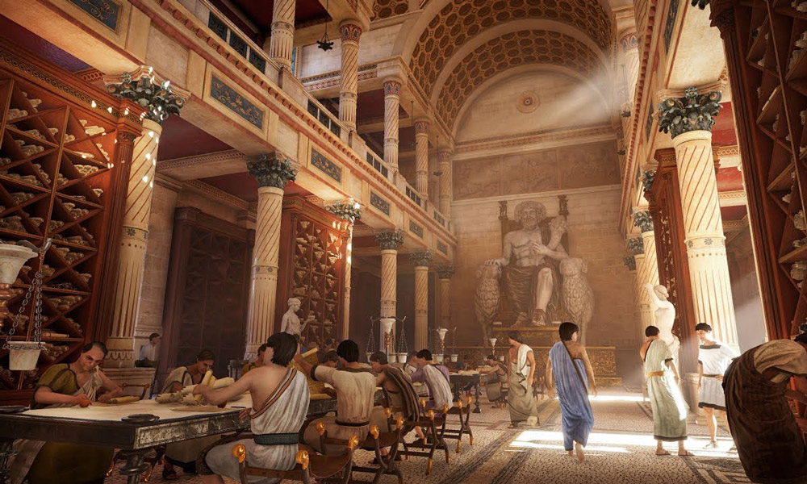
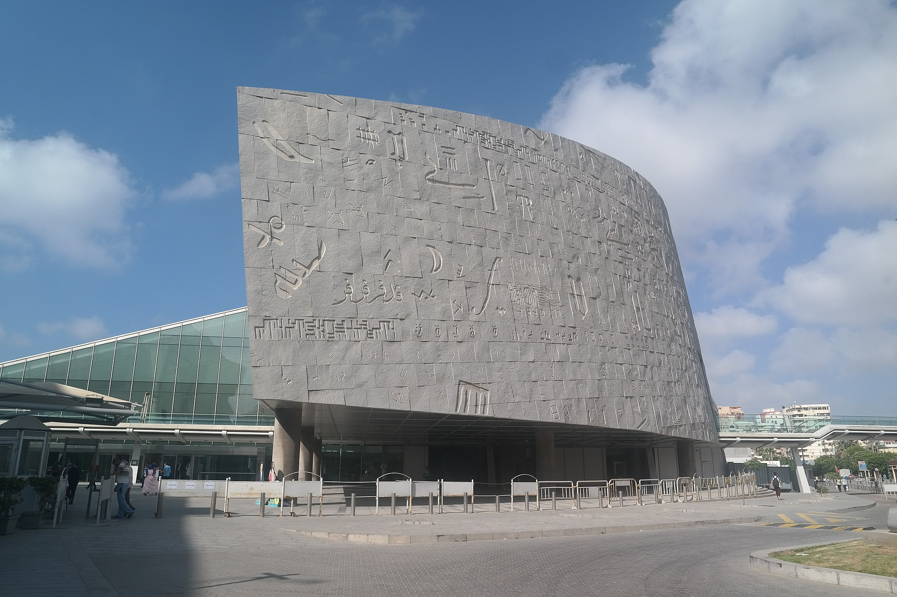

SEJARAH AWAL
 Perpustakaan Alexandria, Perpustakaan klasik paling terkenal. Museum dan perpustakaan ini didirikan dan dikelola oleh penerus Ptolemeus dari awal abad ke-3 SM. Perpustakaan tersebut mencita-citakan cita-cita perpustakaan internasional yang menggabungkan semua literatur Yunani dan juga terjemahan ke dalam bahasa Yunani tetapi tidak diketahui secara pasti seberapa dekat cita-cita ini untuk diwujudkan. Bibliografi perpustakaan yang disusun oleh Callimachus, hilang pada periode Bizantium, sudah lama menjadi karya referensi standar. Museum dan perpustakaan hancur akibat perang saudara pada akhir abad ke-3 M; perpustakaan tambahan dihancurkan oleh umat Kristen pada tahun 391 M. Bibliotheca Alexandrina bersifat tiga bahasa, berisi buku-buku dalam bahasa Arab Klasik, Inggris, dan Prancis. Pada tahun 2010, perpustakaan menerima sumbangan 500.000 buku dari Perpustakaan Nasional Perancis, Bibliothèque nationale de France (BnF). Hadiah tersebut menjadikan Bibliotheca Alexandrina sebagai perpustakaan berbahasa Prancis terbesar keenam di dunia. BA juga kini menjadi tempat penyimpanan buku-buku berbahasa Prancis terbesar di Timur Tengah dan Afrika Utara, melebihi perpustakaan di Tunisia, Aljazair, dan Maroko, selain menjadi perpustakaan Prancis utama di Afrika.
PERTUMBUHAN PERPUSTAKAAN
 Penggabungan perpustakaan dengan Mouseion, yang para sarjananya membutuhkan sumber daya yang dapat diandalkan, membantu perpustakaan berkembang menjadi pusat penelitian yang layak. Lokasinya yang dekat dengan pelabuhan dan di dalam lingkungan istana kerajaan menempatkannya di bawah pengawasan langsung para raja. Keadaan tersebut membantu pesatnya pertumbuhan koleksi perpustakaan. Dalam waktu setengah abad sejak didirikan sekitar tahun 295 SM, koleksi Perpustakaan Kerajaan telah melampaui ruang yang disediakan untuk menampung akumulasi buku. Dirasa perlu untuk mendirikan cabang yang dapat menampung kelebihan volume. Untuk mencapai tujuan tersebut, Ptolemaios III (246–221 SM) memasukkan perpustakaan cabang ke dalam Serapeum yang baru dibangun, yang terletak agak jauh dari kawasan kerajaan di distrik Mesir di selatan kota.
Timeline Sejarah Perpustakaan Alexandria.
| Tragedi | Tahun | Keterangan |
|---|---|---|
| Claudius membangun area tambahan pada Perpustakaan | 40an Masehi | Kaisar Claudius (memerintah 41–54 M) tercatat telah membangun perpustakaan tambahan, namun tampaknya nasib Perpustakaan Aleksandria secara umum mengikuti perkembangan kota Aleksandria itu sendiri. |
| Satu-satunya kepala pustakawan yang diketahui dari Periode Romawi | 50an Masehi | Satu-satunya kepala pustakawan yang diketahui dari Zaman Romawi adalah seorang pria bernama Tiberius Claudius Balbilus, yang hidup pada pertengahan abad pertama masehi dan merupakan seorang politikus, administrator, dan perwira militer yang tidak memiliki catatan pencapaian ilmiah yang besar. |
| Aurelianus bertempur untuk merebut kembali kota Alexandria | 272 Masehi | Pada tahun 272 M, Kaisar Aurelian berperang untuk merebut kembali kota Alexandria dari kekuatan Ratu Palmyrene Zenobia. | Alexandria direbut oleh tentara Muslim 'Amr ibn al-'As | 642 Masehi | Pada tahun 642 M, Alexandria direbut oleh tentara Muslim 'Amr ibn al-'As. Beberapa sumber berbahasa Arab kemudian menggambarkan penghancuran perpustakaan atas perintah Khalifah Omar. | Founding | 280an Sebemlum masehi | Sumber informasi paling awal yang diketahui mengenai pendirian Perpustakaan Alexandria adalah Surat Pseudepigrafi Aristeas, yang disusun antara c. 180 dan c. 145 SM. Ia mengklaim bahwa Perpustakaan ini didirikan pada masa pemerintahan Ptolemeus I Soter (c. 323–c. 283 SM) dan pada awalnya diorganisir oleh Demetrius dari Phalerum, seorang murid Aristoteles yang telah diasingkan dari Athena dan mengungsi di Alexandria dalam wilayah tersebut. istana Ptolemeus. | Kepala pustakawan pertama yang tercatat | 270an Sebelum masehi | Kepala pustakawan pertama yang tercatat adalah Zenodotus dari Efesus. Karya utama Zenodotus dikhususkan untuk pembentukan teks kanonik untuk puisi Homer dan penyair lirik Yunani awal. Kebanyakan dari apa yang diketahui tentang dia berasal dari komentar-komentar selanjutnya yang menyebutkan bacaan-bacaan yang disukainya terhadap bagian-bagian tertentu. Zenodotus diketahui telah menulis glosarium kata-kata langka dan tidak biasa, yang disusun berdasarkan abjad, menjadikannya orang pertama yang diketahui menggunakan urutan abjad sebagai metode pengorganisasiannya. | Seni Tata Bahasa | 100an Sebelum masehi | Murid Aristarchus, Dionysius Thrax (c. 170 – c. 90 SM) mendirikan sebuah sekolah di pulau Rhodes, Yunani. Dionysius Thrax menulis buku pertama tentang tata bahasa Yunani, sebuah panduan ringkas untuk berbicara dan menulis dengan jelas dan efektif. Buku ini tetap menjadi buku teks tata bahasa utama bagi siswa sekolah Yunani hingga abad kedua belas Masehi. Bangsa Romawi mendasarkan tulisan tata bahasa mereka pada hal tersebut, dan format dasarnya tetap menjadi dasar panduan tata bahasa dalam banyak bahasa bahkan hingga saat ini. | Ptolemy VIII menunjuk seorang pria bernama Cydas sebagai kepala pustakawan | 90an Sebelum masehi | Beberapa dinasti Ptolemeus kemudian menggunakan posisi kepala pustakawan hanya sebagai alat politik untuk memberi penghargaan kepada pendukung mereka yang paling setia. Ptolemeus VIII menunjuk seorang pria bernama Cydas, salah satu pengawal istananya, sebagai kepala pustakawan. | Julius Caesar dikepung di Alexandria | 48an Sebelum masehi | Pada tahun 48 SM, selama Perang Saudara Kaisar, Julius Caesar dikepung di Aleksandria. Prajuritnya membakar beberapa kapal Mesir yang berlabuh di pelabuhan Aleksandria ketika mencoba membersihkan dermaga untuk memblokir armada milik saudara laki-laki Cleopatra, Ptolemy XIV. Kebakaran ini konon menyebar ke bagian kota yang paling dekat dengan dermaga, menyebabkan kerusakan parah. |
Siti Nur Oktavia
Ilmu Perpustakaan
5A - Pengembangan Web
11210251000119